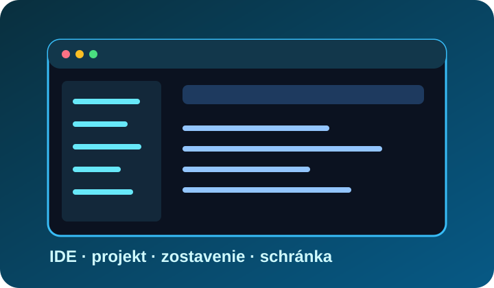

Pracovná osnova · C++ · Windows
Win32 API
Štruktúra kurzu pre tvorbu natívnych desktopových aplikácií vo Windows. Každá položka predstavuje jednu 45-minútovú vyučovaciu hodinu.
Aplikovaná informatika4. ročník SPŠ66 × 45 min4 tematické modulySpolu 49 h 30 min

Rozdelenie hodín je pracovný návrh: zadanie uvádza 66 hodín, kým zoznam obsahuje menej samostatných bodov. Hodiny sú preto rozvrhnuté podľa náročnosti tém; poradie pôvodných tém zostáva zachované.

Modul 01 · 2 vyučovacích hodín
Vstup do predmetu
2 × 45 min

Modul 02 · 20 vyučovacích hodín
Úvod do objektového programovania
20 × 45 min
03Základné pojmyTrieda, objekt a inštancia45 min
04Základné pojmyAtribúty a stav objektu45 min
05Podobnosť a rozdielyPorovnanie procedurálneho a objektového prístupu45 min
06Podobnosť a rozdielyModelovanie reálneho problému objektmi45 min
07Objekty a vlastnostiVlastnosti a životný cyklus objektu45 min
08Objekty a vlastnostiPráca s viacerými objektmi45 min
09Metódy a udalostiMetódy a spracovanie udalostí45 min
10Metódy a udalostiUdalostne riadený program45 min
11Zapuzdrenie a dedičnosťZapuzdrenie dát a rozhranie triedy45 min
12Zapuzdrenie a dedičnosťDedičnosť a opätovné použitie kódu45 min
13PolymorfizmusPrekrývanie metód a polymorfné správanie45 min
14PolymorfizmusNávrh spoločného rozhrania45 min
15Dátové typy a premennéPremenné, konštanty a základné typy45 min
16Dátové typy a premennéKonverzie, rozsah a životnosť premenných45 min
17FunkcieParametre, návratové hodnoty a prototypy45 min
18FunkcieRozdelenie programu na funkcie45 min
19Štruktúry a šablónyŠtruktúry a používateľské dátové typy45 min
20Štruktúry a šablónyŠablóny a generický návrh45 min
21Vstupné a výstupné operácieKonzolový vstup a výstup45 min
22Vstupné a výstupné operácieSúborový vstup a výstup45 min

Modul 03 · 6 vyučovacích hodín
Prostredie programu
6 × 45 min
23Hlavné menuOrientácia v prostredí a hlavné menu45 min
24Hlavné menuNastavenia, zostavenie a spustenie programu45 min
25Vytvorenie projektuNový projekt Win32 a jeho konfigurácia45 min
26Vytvorenie projektuSúbory projektu a nastavenie kompilátora45 min
27ClipboardSchránka Windows a práca s textom45 min
28ClipboardKopírovanie, vkladanie a formáty dát45 min
Modul 04 · 38 vyučovacích hodín
Tvorba projektov
38 × 45 min
29Tvorba projektov s komponentmiNávrh aplikácie z komponentov45 min
30Tvorba projektov s komponentmiPrepojenie komponentov s logikou aplikácie45 min
31FormulárOkno aplikácie a jeho vlastnosti45 min
32FormulárRozloženie a správanie formulára45 min
33Textové poliaVstup a čítanie textu45 min
34Textové poliaValidácia a spracovanie textového vstupu45 min
35Textové polia viacrozmernéViacriadkový text a jeho formátovanie45 min
36Textové polia viacrozmernéPráca s väčším textovým obsahom45 min
37Kontrolný testOverenie vedomostí: formulár a textové polia45 min
38ButtonTlačidlá a obsluha kliknutia45 min
39ButtonAkcie, stav tlačidla a používateľská odozva45 min
40Combo boxVýberové zoznamy a ich položky45 min
41Combo boxNačítanie a spracovanie vybratej hodnoty45 min
42Grafické plátnoKreslenie do plátna a súradnicový systém45 min
43Grafické plátnoTvary, farby a prekresľovanie45 min
44Grafické plátnoInteraktívne kreslenie45 min
45DatabázaNávrh dát a pripojenie databázy45 min
46DatabázaČítanie a zápis údajov45 min
47DatabázaZobrazenie výsledkov v aplikácii45 min
48Databáza 2Úprava a mazanie záznamov45 min
49Databáza 2Filtrovanie, vyhľadávanie a ošetrenie chýb45 min
50DátumVýber dátumu a práca s dátovým typom45 min
51ČasVýber času a práca s časovým údajom45 min
52Kontrolný testOverenie vedomostí: komponenty a databáza45 min
53Samostatný záverečný projektZadanie, požiadavky a návrh riešenia45 min
54Samostatný záverečný projektNávrh používateľského rozhrania45 min
55Samostatný záverečný projektDátový model a architektúra aplikácie45 min
56Samostatný záverečný projektPlánovanie práce a rozdelenie úloh45 min
57Práca na projekteImplementácia jadra aplikácie45 min
58Práca na projekteImplementácia používateľského rozhrania45 min
59Práca na projekteUdalosti a validácia vstupov45 min
60Práca na projekteDáta, súbory alebo databáza45 min
61Práca na projekteTestovanie a oprava chýb45 min
62Práca na projekteDokončenie, dokumentácia a príprava prezentácie45 min
63Prezentácia záverečných projektovPrezentácie projektov – prvá skupina45 min
64Prezentácia záverečných projektovPrezentácie projektov – druhá skupina45 min
65Záverečné hodnotenieZáverečné hodnotenie a spätná väzba45 min
66Záverečné hodnotenieReflexia, zhodnotenie výstupov a ďalší rozvoj45 min